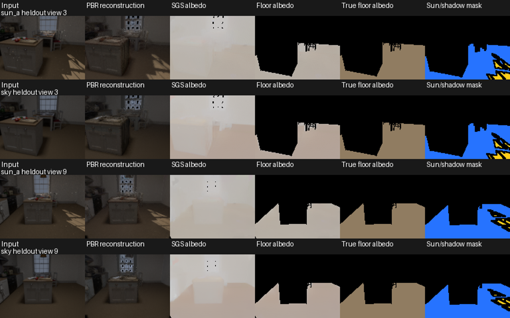
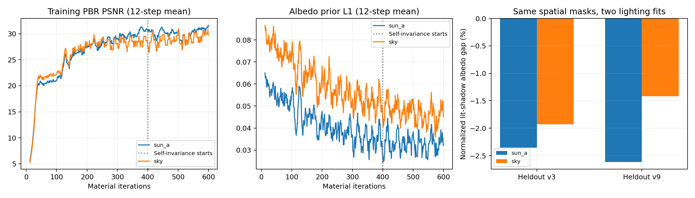

已知几何 P1 · 一个合成房间 · 12 个训练视角 / 2 个留出视角 · 同一材质，有 / 无直射太阳。
SGS 公共上游适配版，1000 步外观初始化 + 600 步材质训练。包含 RGB-X 照片先验、SAM 跨视角约束和光照自一致性。不是官方完整复现，也未证明收敛。
在完全相同的地板位置比较“原太阳受光区 − 阴影区”的反照率差。太阳组减去无太阳组：视角 3：-0.43 个百分点；视角 9：-1.20 个百分点。正值表示太阳组的局部材质变亮更明显；不能仅凭此断言多场景普遍失败。

| 组 | 留出视角 | 线性反照率 MAE | 归一化亮暗差 | 重建 PSNR |
|---|---|---|---|---|
| sun_a | 3 | 0.2156 | -2.36% | 26.66 |
| sky | 3 | 0.1830 | -1.93% | 27.16 |
| sun_a | 9 | 0.2159 | -2.62% | 29.24 |
| sky | 9 | 0.1815 | -1.42% | 30.10 |

GT 太阳、材质和地板掩码只用于独立评分。未做新时刻重照明或真实空间验证。与旧 IRIS 结果的色调映射和先验不同，不能直接做性能排名。